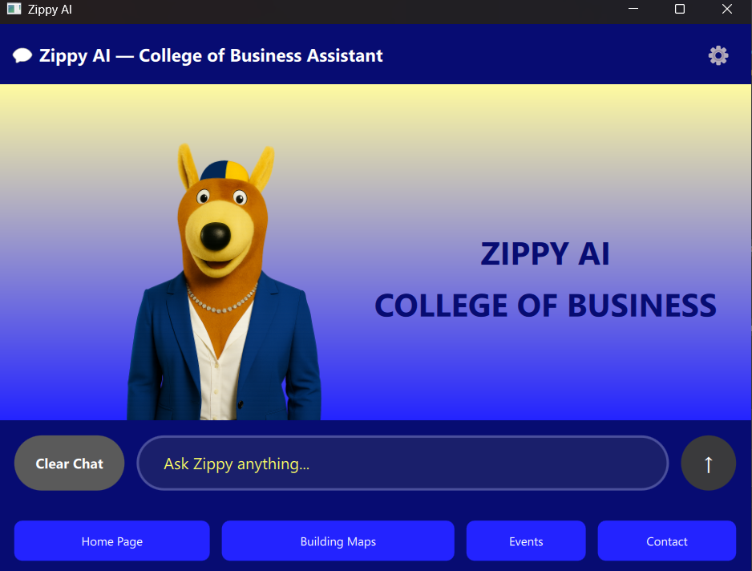

A desktop AI chatbot application designed for the University of Akron College of Business. Zippy provides students and faculty with an intelligent assistant to answer questions about the college, programs, and general inquiries.

Download and install Ollama from: https://ollama.com
After installation, Ollama will run in the background.
Open a terminal/command prompt and run:
ollama pull gpt-oss:20b
This downloads the default AI model used by Zippy (approximately 14GB).
Note for CoB Production: The production server at cobgpu1.uanet.edu
already has the required models installed. Skip this step if connecting
to the CoB GPU server.
Important: Ollama must be running before you start Zippy AI. Ollama typically runs automatically in the background after installation.
Follow the instructions in the "Configuration File" section below to add an Ollama API key so that the model can use web search and web fetch.
Then simply launch appcob_zippy_ai.exe (Windows) or the compiled
executable for your platform.
The program utilizes a configuration file to store persistent settings as well as the Ollama API key used for web search and web fetch. You will need to edit this file in order to provide an API key. The file is called cob_zippy_ai.ini and is located in the same folder as the executable.
The contents should look something like this:
[API]
OllamaKey=yourapikeyhere
[Ollama]
Model=gpt-oss:20b
URL=http://cobgpu1.uanet.edu:11434
ContextSize=32000
Timeout=120
If you don't see the API section when you open the file, add it yourself. You can get an API key by making an account on ollama.com.
# Clone the repository
git clone https://github.com/coblabs/ai.git
cd ai
# Create build directory
mkdir build && cd build
# Configure with CMake
cmake ..
# Build
cmake --build . --config Release
# Run
./appcob_zippy_ai
You can configure Zippy through the settings panel:
http://cobgpu1.uanet.edu:11434 (CoB GPU server)gpt-oss:20b (you can change to other Ollama
models)For production use within the College of Business:
| Setting | Value |
|---|---|
| URL | http://cobgpu1.uanet.edu:11434 |
| Model | gpt-oss:20b |
| Network | Campus VPN or CoB Wired network required |
While Zippy uses gpt-oss:20b by default, you can use any model
available through Ollama. Recommended models for the Tesla L4 (24GB):
| Model | Size | VRAM | Notes |
|---|---|---|---|
gpt-oss:20b |
14GB | ~16-18GB | Default - tool support, reasoning |
llama3.1:8b |
4.7GB | ~6GB | Lighter alternative |
qwen2.5:14b |
~9GB | ~10GB | Excellent reasoning |
mistral:7b |
4.1GB | ~5GB | Fast, efficient |
# List available models
ollama list
# Pull a different model
ollama pull qwen2.5:14b
ollama pull mistral:7b
Then change the model in Zippy's settings.
Please note that Zippy AI requires Ollama to be running in the background. The AI responses are generated locally on your machine using the Ollama framework. Make sure that both Ollama and the model you wish to use with it are both installed prior to using the AI.
curl http://cobgpu1.uanet.edu:11434/api/tagsollama list in terminal to verify Ollama is workingollama pull gpt-oss:20bollama listollama pull <model>Contributions are welcome! Please feel free to submit issues or pull requests.
Zippy AI is free software: you can redistribute it and/or modify it under the terms of the GNU General Public License as published by the Free Software Foundation, either version 3 of the License, or (at your option) any later version.
This program is distributed in the hope that it will be useful, but WITHOUT ANY WARRANTY; without even the implied warranty of MERCHANTABILITY or FITNESS FOR A PARTICULAR PURPOSE. See the GNU General Public License for more details.
You should have received a copy of the GNU General Public License along with this program. If not, see https://www.gnu.org/licenses/.
Developed for the University of Akron College of
Business
Powered by Ollama and Qt
Framework